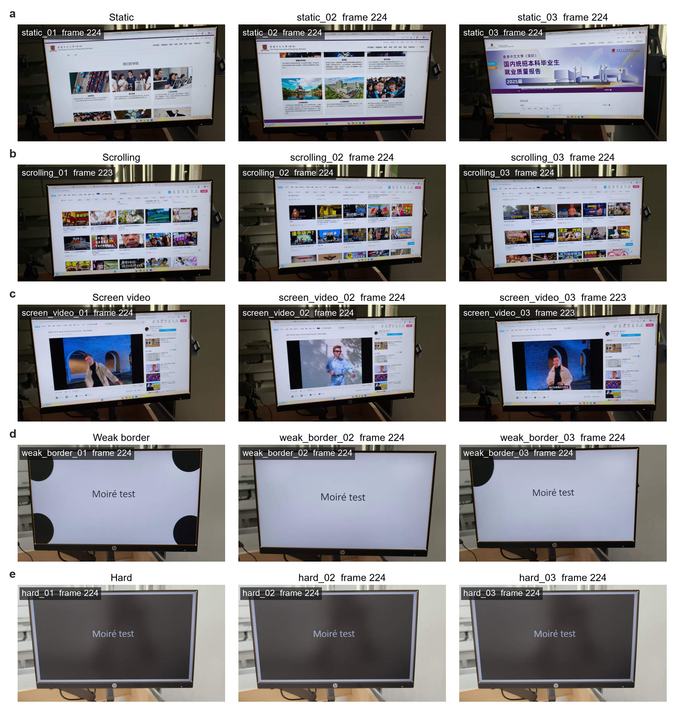
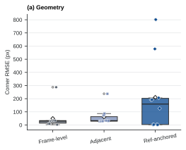
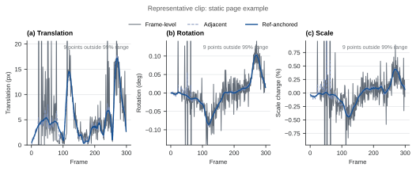

Captured-screen videos are useful when direct screen recording is unavailable, but they combine projective distortion, camera shake, background clutter, weak display borders, and screen content that may scroll or play independently of the physical monitor. This paper studies geometric screen-plane normalization for this setting. We implement a reference-anchored pipeline that initializes a screen quadrilateral, tracks sparse reference-plane features with pyramidal Lucas-Kanade optical flow, estimates a RANSAC homography, applies explicit reliability gates, repairs and smooths the corner trajectory, and warps each frame into a frontal screen coordinate system. On a balanced annotated subset of 10 real captured-screen videos, the reference-anchored method produced smoother estimated trajectories than frame-level detection and adjacent-frame tracking, reducing median translation variation to 2.94 px/frame from 4.29 and 4.91 px/frame. This stability did not translate into better annotated geometry: median corner RMSE was 158.94 px, compared with 30.29 and 32.43 px for the two simpler alternatives. Ablation results show that the reliability gates are the main source of this trade-off: removing them reduced median RMSE to 35.63 px but increased median translation variation to 5.20 px/frame. The result is a reproducible geometric preprocessing benchmark showing that smooth estimated screen trajectories can be stale or wrong, so captured-screen normalization should evaluate temporal stability separately from geometric correctness.
Keywords: screen rectification; video stabilization; homography; optical flow; captured-screen video; projective geometry
Captured-screen video is a practical substitute for direct screen recording in classrooms, demonstrations, meetings, and device-output capture. Unlike a clean screen recording, however, a handheld camera view contains background content, perspective distortion, hand motion, glare, exposure changes, sampling artifacts, and partial occlusion. Downstream tasks such as reading text, restoring content, or removing screen-capture artifacts first need a stable estimate of the physical display plane.
The central difficulty is that the displayed content and the physical screen do not follow the same motion model. Text, web pages, and videos can move inside the display, while the physical monitor moves only through camera motion. A frame-to-frame tracker may therefore follow screen content rather than the screen boundary. Conversely, independent frame-level detection can avoid long-term content drift but may introduce jitter in the rectified output. This paper evaluates that trade-off directly.
We implement a reference-anchored screen-plane normalization pipeline and compare it with two simple alternatives: independent frame-level detection and adjacent-frame tracking. The method tracks sparse features from a fixed reference screen region, estimates a robust homography, accepts only reliable screen-plane updates, repairs short gaps, smooths the trajectory, and renders a frontal video. The evaluated scope is geometric normalization only; content restoration and learned demoireing are outside the experiments.
The paper makes three contributions. First, it defines a reproducible captured-screen normalization workflow from videos and four-corner annotations to geometry and trajectory metrics. Second, it evaluates whether reference anchoring improves temporal stability without conflating stability with correctness. Third, it uses ablations and stress categories to show that reliability gates can suppress jitter while also freezing stale geometry.
Captured-screen restoration and video demoireing methods commonly assume that the screen region is already cropped, aligned, or paired with clean reference data. Relation-based temporal demoireing, direction-aware video demoireing, and raw-domain recaptured-screen restoration focus on recovering displayed content after the screen region is available [13-15]. The present work addresses the preceding geometric front end: estimating and stabilizing the display plane in a full handheld scene.
Planar document and screen rectification use the projective relation between a planar surface and a perspective camera. Camera-based document analysis has used page borders, layout cues, and projective geometry to recover frontal document views [1-3]. Screen-camera calibration also models the display as a planar homography, although controlled calibration patterns provide evidence not available in ordinary handheld recordings [4]. Applying such rectification independently frame by frame does not by itself provide temporal continuity.
The implemented tracker uses standard feature tracking and robust model fitting. Lucas-Kanade registration and its pyramidal implementation support sparse feature tracking under moderate motion [5,6], while Shi-Tomasi features provide trackable image points [7]. RANSAC-style robust estimation is commonly used when correspondences contain outliers [8]. Video stabilization work further shows that camera-path smoothness and geometric distortion should be evaluated separately [9-12]. Captured-screen normalization inherits this separation, but with the additional ambiguity that moving screen content can contaminate a physical-screen estimate.
The input is a handheld video containing one visible display. The output is a video warped to a fixed frontal screen canvas. Each frame is represented by a quadrilateral ordered as top-left, top-right, bottom-right, and bottom-left. The first frame uses a manual four-corner annotation when available, with an automatic contour detector as fallback. Because frame 0 supplies initialization evidence, it is excluded from geometry scoring.
The pipeline tracks the physical screen plane from a fixed reference rather than chaining every estimate from the previous frame (Figure 1). It selects Shi-Tomasi features inside the initialized screen region and tracks them into later frames using pyramidal Lucas-Kanade optical flow. A forward-backward consistency check removes unstable tracks. The remaining correspondences estimate a homography with RANSAC, and that homography projects the reference quadrilateral into the current frame.
The tracker accepts a candidate quadrilateral only when the supporting evidence is internally consistent. The gates check the number of matches, RANSAC inlier count and ratio, reprojection error, spatial coverage over the screen plane, quadrilateral area change, side-length ratios, and convexity. When a candidate fails, the online trajectory holds the last accepted quadrilateral. After processing the clip, the trajectory is repaired by interpolation, median filtering, and exponential smoothing. Each frame is then warped to the fixed screen canvas, with a small residual affine alignment applied only after the main homography.
All compared methods use the same input videos, initialization corners, output canvas, annotations, encoder, and metric code. The first alternative estimates the screen quadrilateral independently in each frame. The second propagates geometry with adjacent-frame optical flow. The reference-anchored method uses fixed-reference tracking, reliability gates, failure holding, trajectory repair, smoothing, and residual alignment. Exact implementation parameters are kept with the reproducibility materials rather than listed in the main text.
The project collection contains 50 captured-screen videos totaling 14985 frames. The five capture conditions each contain ten clips: static pages, scrolling pages, videos playing on the screen, weak-border scenes, and challenging scenes with difficult viewpoints or backgrounds. Figure 2 shows three annotated non-initialization frames from each capture condition and the screen-corner target used for evaluation.

Human annotations mark the visible screen corners. The current 50-clip annotation set contains 248 annotated frames; after excluding initialization frames, all 50 clips retain non-initialization geometry labels, giving 199 scored annotation frames. The updated quantitative comparison in this paper uses a balanced 10-clip subset with two clips per capture condition and 40 non-initialization annotated frames. This subset was selected after completing the scrolling annotations and recomputes geometry and temporal metrics for the main comparison and ablations.
| Capture condition | Clips in collection | Clips in reported subset | Frames in collection |
|---|---|---|---|
| Static pages | 10 | 2 | 2994 |
| Scrolling pages | 10 | 2 | 2995 |
| Videos on screen | 10 | 2 | 2996 |
| Weak-border scenes | 10 | 2 | 3000 |
| Challenging scenes | 10 | 2 | 3000 |
| Total | 50 | 10 | 14985 |
Geometry is evaluated on non-initialization annotated frames using corner root-mean-square error (RMSE), quadrilateral intersection-over-union (IoU), and relative aspect-ratio error. Temporal stability is measured from the frame-to-frame projective change of the estimated screen quadrilateral and summarized as translation, rotation, and scale variation. These temporal values are trajectory-derived diagnostics, not independent ground truth for physical stabilization.
The main text focuses on geometry and temporal stability because they directly test the paper's central trade-off. Earlier detail-preservation and frequency-direction diagnostics remain archived as supporting engineering records, but they are not used as primary evidence here.
The main result is a stability-accuracy trade-off. On the updated 10-clip subset, the reference-anchored method had the lowest median translation variation, but it had the worst median annotated geometry (Figure 3 and Table 2). Its median translation variation was 2.94 px/frame, compared with 4.29 px/frame for frame-level detection and 4.91 px/frame for adjacent-frame tracking. In contrast, its median corner RMSE was 158.94 px, compared with 30.29 px and 32.43 px for the two alternatives.

| Metric | Frame-level detection | Adjacent-frame tracking | Reference-anchored |
|---|---|---|---|
| Corner RMSE, px ↓ | 30.29 [14.07, 33.40] | 32.43 [29.17, 63.39] | 158.94 [3.47, 202.66] |
| Quadrilateral IoU ↑ | 0.980 [0.979, 0.988] | 0.978 [0.935, 0.979] | 0.871 [0.826, 0.996] |
| Translation variation, px/frame ↓ | 4.29 [3.41, 5.62] | 4.91 [2.91, 12.31] | 2.94 [0.03, 3.80] |
This pattern means that a smoother estimated trajectory is not necessarily a more correct screen-plane trajectory. The reference-anchored method can hold a stable quadrilateral when the evidence is weak or misleading. That hold reduces short-term variation, but it can also preserve an old or incorrect geometry estimate.
The category-level results show where the trade-off comes from (Figure 4). Reference anchoring was accurate on static pages and videos playing on the screen, where its median RMSE was 2.68 px and 3.12 px. It failed badly on scrolling pages, where the median RMSE reached 689.91 px, consistent with internal content motion corrupting the reference-plane evidence. Challenging scenes also produced high error, with a median RMSE of 191.83 px for the reference-anchored method.

Weak-border and challenging scenes reveal the other side of the method. In those conditions, the reference-anchored method produced very low translation variation, with medians of 0.017 and 0.026 px/frame, respectively. The low variation is therefore not sufficient evidence of success: it can reflect long holds when the gates reject updates.
The ablation study identifies reliability gating as the main mechanism behind the observed trade-off. Removing the gates reduced median corner RMSE from 158.94 px to 35.63 px and increased median IoU from 0.871 to 0.968 (Table 3). At the same time, median translation variation increased from 2.94 px/frame to 5.20 px/frame. This is the expected direction if the gates suppress short-term jitter but also prevent the tracker from correcting stale geometry.
| Variant | Corner RMSE, px ↓ | IoU ↑ | Translation variation, px/frame ↓ |
|---|---|---|---|
| Full reference-anchored method | 158.94 [3.47, 202.66] | 0.871 [0.826, 0.996] | 2.94 [0.03, 3.80] |
| Without reliability gates | 35.63 [3.51, 47.85] | 0.968 [0.962, 0.996] | 5.20 [3.55, 6.16] |
| Without trajectory smoothing | 158.94 [2.82, 202.66] | 0.871 [0.826, 0.997] | 3.07 [0.09, 3.96] |
| Without offline repair | 158.94 [3.47, 202.66] | 0.871 [0.826, 0.996] | 2.94 [0.03, 3.80] |
The smoothing and offline-repair ablations were close to the full method on this subset. That does not prove those modules are unimportant in all settings. It shows that, under the sampled clips and metrics, the gate decision dominated the geometry-temporal trade-off.
Qualitative outputs match the quantitative pattern (Figure 5). When the tracked reference plane remains aligned with the physical screen, the reference-anchored output is visually stable. When internal scrolling, weak screen boundaries, or difficult viewpoints dominate the tracked evidence, the method can hold a shifted or cropped screen region. These cases are visually stable but geometrically wrong.

The experiments show that reference anchoring is useful but not sufficient for captured-screen normalization. It reduces trajectory variation by avoiding purely frame-to-frame drift, but the same mechanism can produce misleading stability when the accepted quadrilateral is stale. This explains why geometry and temporal stability must be reported separately.
The ablation results indicate that update acceptance is the critical design choice. Conservative gates help suppress jitter, especially in weak-border and challenging scenes, but they can also block corrections. Removing the gates recovers much of the annotated geometry at the cost of higher temporal variation. A stronger system should therefore improve the evidence used for accepting updates, for example by incorporating physical screen-boundary cues so that moving screen content cannot dominate the homography.
The evaluation has several boundaries. The dataset is small and self-collected, so it does not establish generalization across capture devices, display technologies, distances, or lighting conditions. The updated geometry and temporal results are computed on a balanced 10-clip subset, not yet on a full 50-clip rerun under the completed annotation state. Geometry labels are sparse keyframes rather than dense frame-level ground truth. Finally, the temporal metric is derived from the estimated quadrilateral itself, so it diagnoses output smoothness but does not independently prove physical screen-plane correctness.
This paper evaluates reference-anchored geometric normalization for real captured-screen videos. On an updated annotated subset, the method reduced estimated trajectory variation but did not improve annotated screen geometry. Ablation showed that reliability gates drive this stability-accuracy trade-off: they suppress jitter, but they can also freeze stale geometry. The main implication is that captured-screen preprocessing should not treat smoothness as correctness. Future work should add stronger physical screen-plane evidence and rerun the full benchmark under the completed annotation set.
The project contains a local 50-clip captured-screen video collection with sidecar corner annotations. The raw videos are course-project data and require team review before public release. Aggregated metrics and evidence notes used for the manuscript are archived in the repository documentation.
The code is provided with the project repository and is run with uv-managed Python scripts. The repository includes the manuscript sources, evaluation scripts, and archived aggregate metrics needed to reproduce the reported tables from the available local data.
All three authors contributed to project framing, data collection, annotation, implementation, experiment execution, and manuscript preparation.